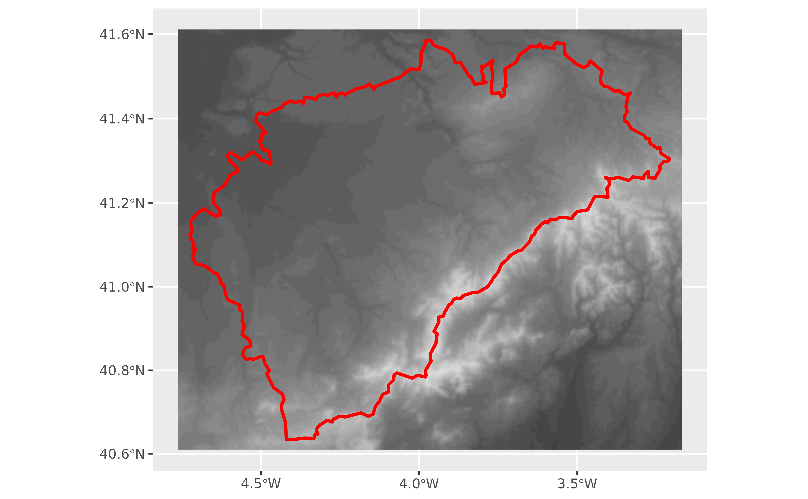
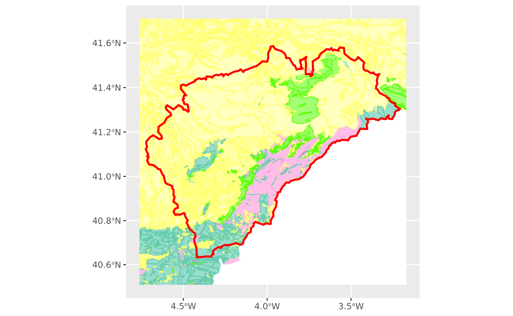
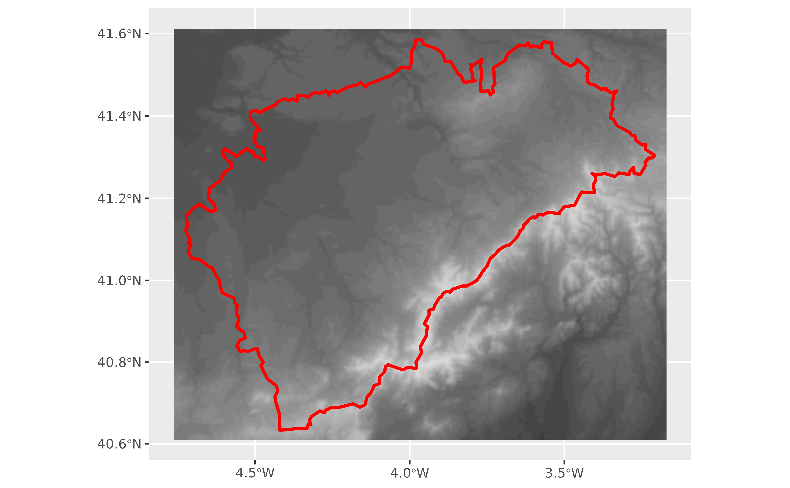
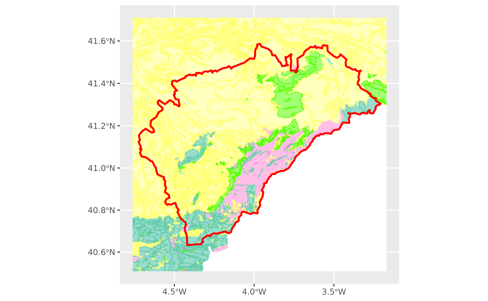
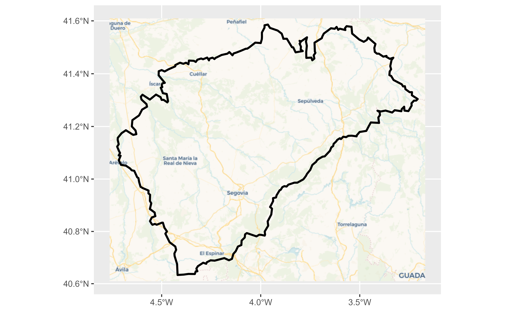
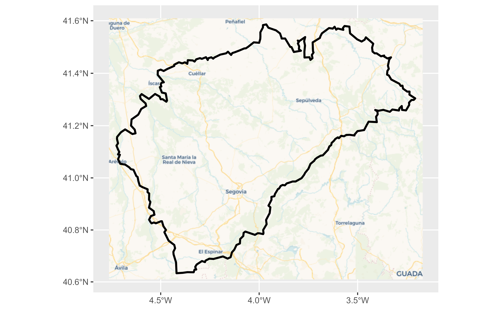

Get static map tiles based on a spatial object. Maps can be fetched from various open map servers.
This function is a implementation of the javascript plugin leaflet-providersESP v1.3.3.
Usage
esp_get_tiles(
x,
type = "IDErioja",
zoom = NULL,
zoommin = 0,
crop = TRUE,
res = 512,
bbox_expand = 0.05,
transparent = TRUE,
mask = FALSE,
update_cache = FALSE,
cache_dir = NULL,
verbose = FALSE,
options = NULL
)Source
https://dieghernan.github.io/leaflet-providersESP/ leaflet plugin, v1.3.3.
Arguments
- x
- type
This parameter could be either:
The name of one of the pre-defined providers (see
esp_tiles_providers()).A list with two named elements
idandqwith your own parameters. Seeesp_make_provider()and examples.
- zoom
Zoom level. If
NULL, it is determined automatically. If set, it overrideszoommin. Only valid for WMTS tiles. On a single point it applies a buffer to the point and onzoom = NULLthe function set a zoom level of 18. See Details.- zoommin
Delta on default
zoom. The default value is designed to download fewer tiles than you probably want. Use1or2to increase the resolution.- crop
TRUEif results should be cropped to the specifiedxextent,FALSEotherwise. Ifxis ansfobject with onePOINT,cropis set toFALSE.- res
Resolution (in pixels) of the final tile. Only valid for WMS.
- bbox_expand
A numeric value that indicates the expansion percentage of the bounding box of
x.- transparent
Logical. Provides transparent background, if supported. Depends on the selected provider on
type.- mask
TRUEif the result should be masked tox.- update_cache
A logical whether to update cache. Default is
FALSE. When set toTRUEit would force a fresh download of the source file.- cache_dir
A path to a cache directory. See About caching.
- verbose
Logical, displays information. Useful for debugging, default is
FALSE.- options
A named list containing additional options to pass to the query.
Value
A SpatRaster is returned, with 3 (RGB) or 4 (RGBA) layers, depending on
the provider. See terra::rast().
.
Details
Zoom levels are described on the OpenStreetMap wiki:
| zoom | area to represent |
| 0 | whole world |
| 3 | large country |
| 5 | state |
| 8 | county |
| 10 | metropolitan area |
| 11 | city |
| 13 | village or suburb |
| 16 | streets |
| 18 | some buildings, trees |
For a complete list of providers see esp_tiles_providers.
Most WMS/WMTS providers provide tiles on "EPSG:3857". In case that the tile
looks deformed, try projecting first x:
x <- sf::st_transform(x, 3857)
About caching
You can set your cache_dir with esp_set_cache_dir().
Sometimes cached files may be corrupt. On that case, try re-downloading
the data setting update_cache = TRUE.
If you experience any problem on download, try to download the
corresponding .geojson file by any other method and save it on your
cache_dir. Use the option verbose = TRUE for debugging the API query.
See also
Other imagery utilities:
addProviderEspTiles(),
esp_make_provider(),
esp_tiles_providers
Examples
# \dontrun{
# This script downloads tiles to your local machine
# Run only if you are online
segovia <- esp_get_prov_siane("segovia", epsg = 3857)
tile <- esp_get_tiles(segovia, "IGNBase.Todo")
library(ggplot2)
library(tidyterra)
ggplot(segovia) +
geom_spatraster_rgb(data = tile, maxcell = Inf) +
geom_sf(fill = NA)
 # Another provider
tile2 <- esp_get_tiles(segovia, type = "MDT")
ggplot(segovia) +
geom_spatraster_rgb(data = tile2, maxcell = Inf) +
geom_sf(fill = NA)

# A custom WMS provided
custom_wms <- esp_make_provider(
id = "an_id_for_caching",
q = "https://idecyl.jcyl.es/geoserver/ge/wms?",
service = "WMS",
version = "1.3.0",
format = "image/png",
layers = "geolog_cyl_litologia"
)
custom_wms_tile <- esp_get_tiles(segovia, custom_wms)
autoplot(custom_wms_tile, maxcell = Inf) +
geom_sf(data = segovia, fill = NA, color = "red")

# A custom WMTS provider
custom_wmts <- esp_make_provider(
id = "cyl_wmts",
q = "https://www.ign.es/wmts/pnoa-ma?",
service = "WMTS",
layer = "OI.OrthoimageCoverage"
)
custom_wmts_tile <- esp_get_tiles(segovia, custom_wmts)
autoplot(custom_wmts_tile, maxcell = Inf) +
geom_sf(data = segovia, fill = NA, color = "white", linewidth = 2)
# Another provider
tile2 <- esp_get_tiles(segovia, type = "MDT")
ggplot(segovia) +
geom_spatraster_rgb(data = tile2, maxcell = Inf) +
geom_sf(fill = NA)

# A custom WMS provided
custom_wms <- esp_make_provider(
id = "an_id_for_caching",
q = "https://idecyl.jcyl.es/geoserver/ge/wms?",
service = "WMS",
version = "1.3.0",
format = "image/png",
layers = "geolog_cyl_litologia"
)
custom_wms_tile <- esp_get_tiles(segovia, custom_wms)
autoplot(custom_wms_tile, maxcell = Inf) +
geom_sf(data = segovia, fill = NA, color = "red")

# A custom WMTS provider
custom_wmts <- esp_make_provider(
id = "cyl_wmts",
q = "https://www.ign.es/wmts/pnoa-ma?",
service = "WMTS",
layer = "OI.OrthoimageCoverage"
)
custom_wmts_tile <- esp_get_tiles(segovia, custom_wmts)
autoplot(custom_wmts_tile, maxcell = Inf) +
geom_sf(data = segovia, fill = NA, color = "white", linewidth = 2)
 # Example from https://leaflet-extras.github.io/leaflet-providers/preview/
cartodb_voyager <- list(
id = "CartoDB_Voyager",
q = "https://a.basemaps.cartocdn.com/rastertiles/voyager/{z}/{x}/{y}.png"
)
cartodb <- esp_get_tiles(segovia, cartodb_voyager, zoommin = 1)
autoplot(cartodb, maxcell = Inf) +
geom_sf(data = segovia, fill = NA, color = "black", linewidth = 1)

# }
# Example from https://leaflet-extras.github.io/leaflet-providers/preview/
cartodb_voyager <- list(
id = "CartoDB_Voyager",
q = "https://a.basemaps.cartocdn.com/rastertiles/voyager/{z}/{x}/{y}.png"
)
cartodb <- esp_get_tiles(segovia, cartodb_voyager, zoommin = 1)
autoplot(cartodb, maxcell = Inf) +
geom_sf(data = segovia, fill = NA, color = "black", linewidth = 1)

# }